Testing RADIUS from CLI
When working with RADIUS products such as Cisco ISE, we frequently need to test authentication to validate that our policies are working. The obvious method to perform this testing is to stand up a network device such as a Wireless Controller, Switch or a VPN headend and connect to them using real endpoints.
All of that takes time and effort to configure. What I will describe in this post is a how we can use a couple of Linux CLI utilities to send authentication requests both in clear text as well as EAP using various authentication methods.
Setup
Topology
I'm using a simple setup with two ISE nodes that are on the same subnet as Ubuntu 22.04.1 LTS server.
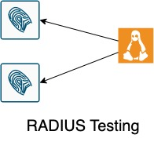
Certificates
For client certificates, I will use XCA from https://hohnstaedt.de/xca/. This is a stand alone Windows and macOS application that can easily generate and manipulate certificates. There are a few tutorials on the Internet including on their own website: https://hohnstaedt.de/xca/index.php/documentation/stepbystep
This is the hierarchy, we will use for this post
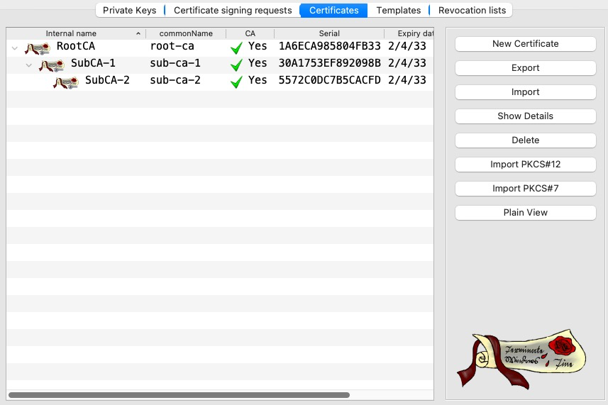
We will start by loading only the Root CA into ISE. Since we're testing EAP, we need to enable the certificate for Endpoints.
For ISE EAP certificate, we will use a different CA chain from Microsoft CA
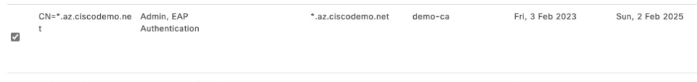
ISE Configuration
We will use mostly the default policies for this document. To enable MAB authorization, we will enable the Guest Redirect rule that's already in the default policy.
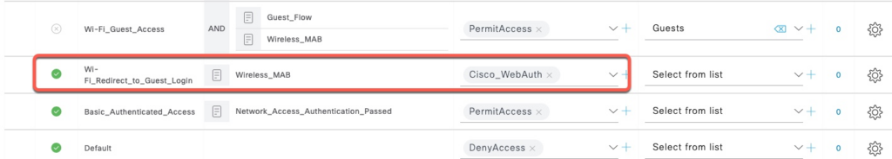
We also add a test user and a network device for the Linux host.
Password for the user is Password123
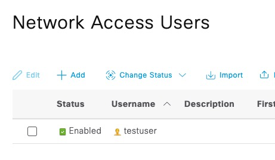
RADIUS secret for this device is cisco
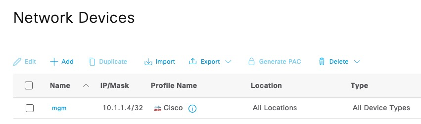
Ubuntu
Depending on the age of Ubuntu image, it's best practice to run package update
$ sudo apt updateTo test basic RADIUS authentication, we can use radclient utility that comes with freeradius-utils package
$ sudo apt install freeradius-utils -y
Reading package lists... Done
Building dependency tree... Done
Reading state information... Done
The following additional packages will be installed:
freeradius-common freeradius-config libdbi-perl libfreeradius3 ssl-cert
Suggested packages:
libclone-perl libmldbm-perl libnet-daemon-perl libsql-statement-perl
The following NEW packages will be installed:
freeradius-common freeradius-config freeradius-utils libdbi-perl
libfreeradius3 ssl-cert
0 upgraded, 6 newly installed, 0 to remove and 0 not upgraded.
Need to get 1493 kB of archives.
-----------------------SNIP----------------------------
$ radclient -v
radclient version 3.0.26, built on Jan 4 2023 at 03:23:09
$ This utility does not support EAP. To test 802.1x authentication, we will use eapol_test utility that comes with wpa_supplicant source code.
To build eapol_test, we need to install some additional development packages
$ sudo apt install make gcc libssl-dev libnl-3-dev libnl-genl-3-dev libnl-route-3-dev -yFirst, we need to download the latest wpa_supplicant tarball. All of the releases can be found here: https://w1.fi/releases/. At the time of this writing, 2.10 is the latest version. Once downloaded, we extract the tar file.
$ wget https://w1.fi/releases/wpa_supplicant-2.10.tar.gz
--2023-02-04 23:36:20-- https://w1.fi/releases/wpa_supplicant-2.10.tar.gz
Resolving w1.fi (w1.fi)... 212.71.239.96
Connecting to w1.fi (w1.fi)|212.71.239.96|:443... connected.
HTTP request sent, awaiting response... 200 OK
Length: 3511622 (3.3M) [application/x-gzip]
Saving to: ‘wpa_supplicant-2.10.tar.gz’
wpa_supplicant-2.10 100%[===================>] 3.35M 6.24MB/s in 0.5s
2023-02-04 23:36:21 (6.24 MB/s) - ‘wpa_supplicant-2.10.tar.gz’ saved [3511622/3511622]
$ tar zxf wpa_supplicant-2.10.tar.gz
$ ls -l
drwxrwxr-x 5 azadmin azadmin 4096 Jan 16 2022 wpa_supplicant-2.10
-rw-rw-r-- 1 azadmin azadmin 3511622 Jan 16 2022 wpa_supplicant-2.10.tar.gzNext, we need to copy a default config file and uncomment the line to build eapol_test. That line is CONFIG_EAPOL_TEST=y, remove # in front of it.
Additionally, to eliminate some compile errors, comment out these two options by putting # in front of them:
CONFIG_CTRL_IFACE_DBUS_NEW=y and CONFIG_CTRL_IFACE_DBUS_INTRO=y
$ cd wpa_supplicant-2.10/wpa_supplicant/
$ cp defconfig .config
$ vi .config
$ egrep 'EAPOL_TEST|DBUS' .config
CONFIG_EAPOL_TEST=y
#CONFIG_CTRL_IFACE_DBUS_NEW=y
#CONFIG_CTRL_IFACE_DBUS_INTRO=yTo eliminate some deprecation errors during compilation, we need to set this environment variable and run make eapol_test. After a couple of minutes of compilation, you should end up with eapol_test binary.
$ export EXTRA_CFLAGS=-Wno-error=deprecated-declarations
$ make eapol_test
make: pkg-config: No such file or directory
$ ls -l eapol_test
-rwxrwxr-x 1 azadmin azadmin 11866032 Feb 4 23:57 eapol_test
$ ./eapol_test -v
eapol_test v2.10
$Testing with radclient
Basic PAP
In this test, we will execute the simplest authentication using just the username and password
radclient takes RADIUS attributes from stdin and we're supplying them using echo command
Note where we're specifying the user password Password123 and the RADIUS shared secret cisco.
$ echo User-Name:=testuser,User-Password=Password123|radclient -x 10.1.1.5 auth cisco
Sent Access-Request Id 202 from 0.0.0.0:41777 to 10.1.1.5:1812 length 48
User-Name := "testuser"
User-Password = "Password123"
Cleartext-Password = "Password123"
Received Access-Accept Id 202 from 10.1.1.5:1812 to 10.1.1.4:41777 length 106
User-Name = "testuser"
Class = 0x434143533a3061303130313035304f37585870664b3868574f336d3055422f636f556d3355707465515f615934594130314f6c714c7a5a773a6973652d322f3436343931393636382f31ISE shows successful authentication. Note that there's no endpoint information since we didn't supply the Calling-Station-Id attribute
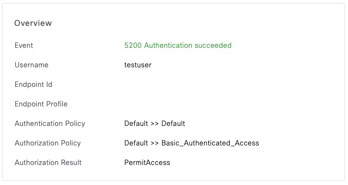
Basic PAP with Calling-Station-Id
In this example, we're supplying the endpoint MAC address.
$ echo User-Name:=testuser,User-Password=Password123,Calling-Station-Id=11:22:33:44:55:66|radclient -x 10.1.1.5 auth cisco
Sent Access-Request Id 52 from 0.0.0.0:48064 to 10.1.1.5:1812 length 67
User-Name := "testuser"
User-Password = "Password123"
Calling-Station-Id = "11:22:33:44:55:66"
Cleartext-Password = "Password123"
Received Access-Accept Id 52 from 10.1.1.5:1812 to 10.1.1.4:48064 length 106ISE now shows that MAC address
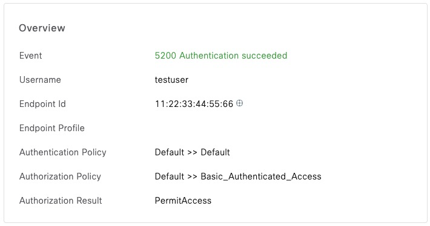
Wired MAC Address Bypass (MAB)
In the first MAB example, we're sending a wired MAB request. The two attribute that make it Wired MAB are Service-Type and NAS-Port-Type
$ echo User-Name:=11-22-33-44-55-66,User-Password=11-22-33-44-55-66,Calling-Station-Id=11:22:33:44:55:66,Service-Type=Call-Check,NAS-Port-Type=Ethernet|radclient -x 10.1.1.5 auth cisco
Sent Access-Request Id 166 from 0.0.0.0:51039 to 10.1.1.5:1812 length 104
User-Name := "11-22-33-44-55-66"
User-Password = "11-22-33-44-55-66"
Calling-Station-Id = "11:22:33:44:55:66"
Service-Type = Call-Check
NAS-Port-Type = Ethernet
Cleartext-Password = "11-22-33-44-55-66"
Received Access-Accept Id 166 from 10.1.1.5:1812 to 10.1.1.4:51039 length 143We can confirm that this is a MAB request
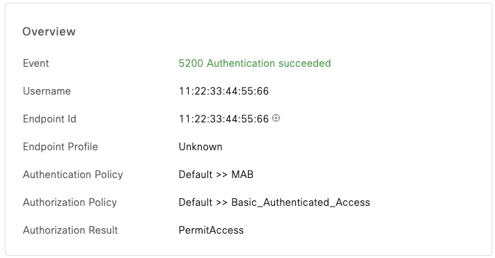
Wireless MAC Address Bypass (MAB)
To change from Wired to Wireless, we switch NAS-Port-Type to Wireless-802.11. We can see in the output that we hit the CWA redirect rule
$ echo User-Name:=11-22-33-44-55-66,User-Password=11-22-33-44-55-66,Calling-Station-Id=11:22:33:44:55:66,Service-Type=Call-Check,NAS-Port-Type=Wireless-802.11|radclient -x 10.1.1.5 auth cisco
Sent Access-Request Id 238 from 0.0.0.0:50012 to 10.1.1.5:1812 length 104
User-Name := "11-22-33-44-55-66"
User-Password = "11-22-33-44-55-66"
Calling-Station-Id = "11:22:33:44:55:66"
Service-Type = Call-Check
NAS-Port-Type = Wireless-802.11
Cleartext-Password = "11-22-33-44-55-66"
Received Access-Accept Id 238 from 10.1.1.5:1812 to 10.1.1.4:50012 length 415
User-Name = "11-22-33-44-55-66"
Class = 0x434143533a30613031303130352f4f676a7977785733306753503567372f64463936674f4d524d54723274684c35634976765072613457513a6973652d322f3436343931393636382f36
Cisco-AVPair = "url-redirect-acl=ACL_WEBAUTH_REDIRECT"
Cisco-AVPair = "url-redirect=https://ise-2.az.ciscodemo.net:8443/portal/gateway?sessionId=0a010105/OgjywxW30gSP5g7/dF96gOMRMTr2thL5cIvvPra4WQ&portal=f09aaac2-f101-45ed-832f-fda201ab7639&action=cwa&token=9ee45b7fede2f1c2a8830b002c0cdd63"
Cisco-AVPair = "profile-name=Unknown"In ISE, we can confirm that we matched the correct authorization rule
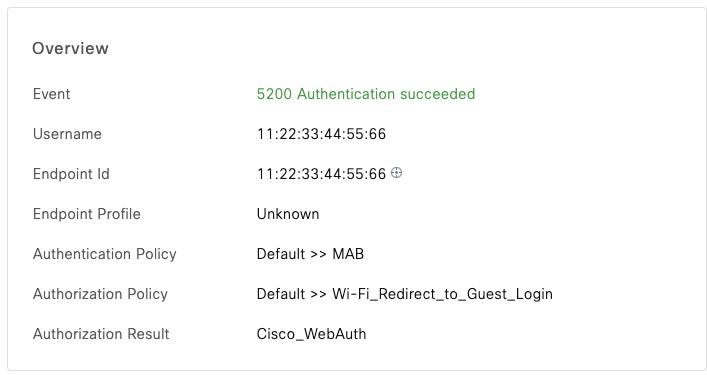
Accounting Request
Referring to the previous example, ISE will show this session as Authenticated since it hasn't received accounting start packet.
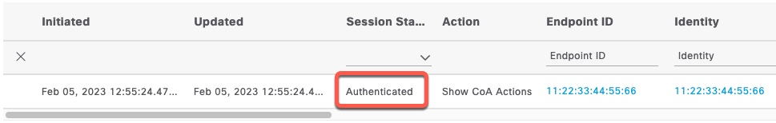
radclient can be used to send account packets as well. In the following example, we're keeping all the attributes from the previous section and adding Framed-IP-Address set to the client IP address, Acct-Status-Type set to start and a mandatory Acct-Session-Id attribute. The session attribute can be set to any value. We're also changing argument for radclient from auth to acct
$ echo User-Name:=11-22-33-44-55-66,User-Password=11-22-33-44-55-66,Calling-Station-Id=11:22:33:44:55:66,Service-Type=Call-Check,NAS-Port-Type=Wireless-802.11,Framed-IP-Address=192.168.1.1,Acct-Status-Type=S
tart,Acct-Session-Id=1|radclient -x 10.1.1.5 acct cisco
Sent Accounting-Request Id 113 from 0.0.0.0:48690 to 10.1.1.5:1813 length 119
User-Name := "11-22-33-44-55-66"
User-Password = "11-22-33-44-55-66"
Calling-Station-Id = "11:22:33:44:55:66"
Service-Type = Call-Check
NAS-Port-Type = Wireless-802.11
Framed-IP-Address = 192.168.1.1
Acct-Status-Type = Start
Acct-Session-Id = "1"
Cleartext-Password = "11-22-33-44-55-66"
Received Accounting-Response Id 113 from 10.1.1.5:1813 to 10.1.1.4:48690 length 20Now, the session is ISE shows Started and we see the client IP Address.
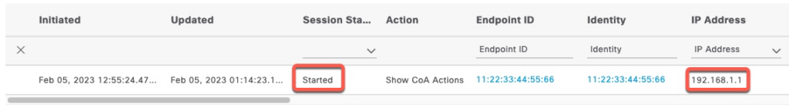
To "disconnect" the session, we change Acct-Status-Type to Stop
$ echo User-Name:=11-22-33-44-55-66,User-Password=11-22-33-44-55-66,Calling-Station-Id=11:22:33:44:55:66,Service-Type=Call-Check,NAS-Port-Type=Wireless-802.11,Framed-IP-Address=192.168.1.1,Acct-Status-Type=Stop,Acct-Session-Id=1|radclient -x 10.1.1.5 acct cisco
Sent Accounting-Request Id 64 from 0.0.0.0:36665 to 10.1.1.5:1813 length 119
User-Name := "11-22-33-44-55-66"
User-Password = "11-22-33-44-55-66"
Calling-Station-Id = "11:22:33:44:55:66"
Service-Type = Call-Check
NAS-Port-Type = Wireless-802.11
Framed-IP-Address = 192.168.1.1
Acct-Status-Type = Stop
Acct-Session-Id = "1"
Cleartext-Password = "11-22-33-44-55-66"
Received Accounting-Response Id 64 from 10.1.1.5:1813 to 10.1.1.4:36665 length 20In ISE, the session now shows Terminated
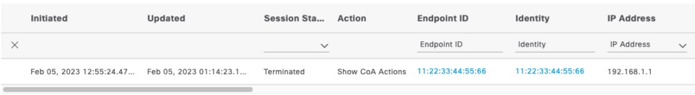
ASA VPN with Tunnel Group
When authentication attempts come from ASA firewall via RADIUS, they contain Tunnel Group name in a Vendor Specific Attribute (VSA).
In this screenshot from ISE, this is the condition that matches on the Tunnel Group name.
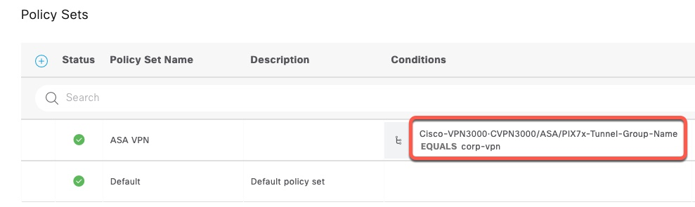
In order, to send this attribute with radclient, we first need to find the name of this attribute in freeradius dictionary. Referencing the ASA dictionary from https://github.com/FreeRADIUS/freeradius-server/blob/master/share/dictionary/radius/dictionary.cisco.asa, we can find the name of that attribute.
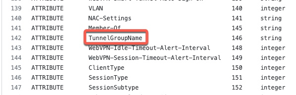
We also need to get the vendor ID
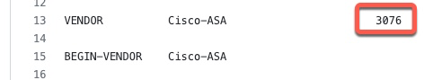
I originally couldn't figure out how to specify this attribute by name, so I added the section how to calculate this value manually. However, once I figured out how to send the attribute manually, it turned out that the attribute name is ASA-TunnelGroupName. See example below
We now need to construct the VSA payload manually.
We need to send the following attribute:
- Type: 26
- Vendor: 3076
- Vendor Type: 146
- Attribute: corp-vpn
This screenshot shows the format of this attribute.
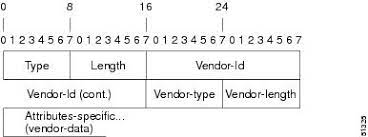
The values that we need to put in are as follows:
- Type: 26 (0x1A). This is the number for VSA attributes.
- Length: 16 (0x010). This is the length of the entire attribute, including Type.
- Vendor ID: 3076 (0x000000C04). This is a 4-byte value.
- Vendor Type: 146 (0x92)
- Vendor Length: 10 (0x0A). This is the length of the entire attributes starting at Vendor-Type
- Attribute Value: corp-vpn (0x636F72702D76706E)
The final value is 0x1A 10 00 00 0C 04 92 0A 63 6F 72 70 2D 76 70 6E
When supplying this value to radclient we don't need to specify the first two bytes because those will be calculated by the utility itself.
$ echo User-Name:=testuser,User-Password=Password123,Calling-Station-Id=200.200.200.200,Attr-26=0x00000C04920A636F72702D76706E|radclient -x 10.1.1.5 auth cisco
Sent Access-Request Id 215 from 0.0.0.0:51396 to 10.1.1.5:1812 length 81
User-Name := "testuser"
User-Password = "Password123"
Calling-Station-Id = "200.200.200.200"
ASA-TunnelGroupName = "corp-vpn"
Cleartext-Password = "Password123"
Received Access-Accept Id 215 from 10.1.1.5:1812 to 10.1.1.4:51396 length 107We can see that radclient displayed what the name of this attribute actually is, so we can supply it using that name.
$ echo User-Name:=testuser,User-Password=Password123,Calling-Station-Id=200.200.200.200,ASA-TunnelGroupName=corp-vpn|radclient -x 10.1.1.5 auth cisco
Sent Access-Request Id 251 from 0.0.0.0:41881 to 10.1.1.5:1812 length 81
User-Name := "testuser"
User-Password = "Password123"
Calling-Station-Id = "200.200.200.200"
ASA-TunnelGroupName = "corp-vpn"
Cleartext-Password = "Password123"
Received Access-Accept Id 251 from 10.1.1.5:1812 to 10.1.1.4:41881 length 107In ISE, we can see that we matched the correct policy.
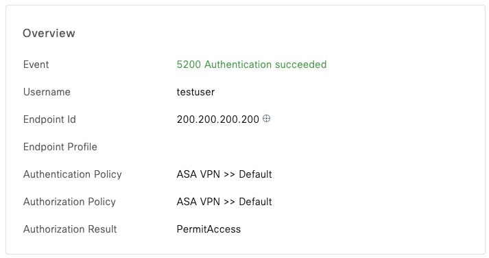
Handling RADIUS Challenges
If a network device is integrated with an external One Time Token (OTP) system, that integration is commonly done via RADIUS. These systems also return challenge prompts to the user.
Expanding on the previous example with ASA, we now point ISE at an external RADIUS Token Server. We can see that ISE is now returning an Access-Challenge
$ echo User-Name:=testuser,User-Password=Password123,ASA-TunnelGroupName=corp-vpn|radclient -x 10.1.1.5 auth cisco
Sent Access-Request Id 175 from 0.0.0.0:60022 to 10.1.1.5:1812 length 64
User-Name := "testuser"
User-Password = "Password123"
ASA-TunnelGroupName = "corp-vpn"
Cleartext-Password = "Password123"
Received Access-Challenge Id 175 from 10.1.1.5:1812 to 10.1.1.4:60022 length 142
Reply-Message = "The password is 9092"
State = 0x363443504d53657373696f6e49443d30613031303130354f494c5835794b534449545a496b5247695f38484e344b685835676d6a4f387135484c376a554d326966733b323853657373696f6e49443d6973652d312f3436353036373730372f31383b
The State attribute in the output above is how ISE tracks challenges. We can now respond to this challenge by supplying new correct token code and the State attribute.
$ echo User-Name:=testuser,User-Password=9092,ASA-TunnelGroupName=corp-vpn,State=0x363443504d53657373696f6e49443d30613031303130354f494c5835794b534449545a496b5247695f38484e344b685835676d6a4f387135484c376a554d326966733b323853657373696f6e49443
d6973652d312f3436353036373730372f31383b|radclient -x 10.1.1.5 auth cisco
Sent Access-Request Id 167 from 0.0.0.0:46907 to 10.1.1.5:1812 length 164
User-Name := "testuser"
User-Password = "9092"
ASA-TunnelGroupName = "corp-vpn"
State = 0x363443504d53657373696f6e49443d30613031303130354f494c5835794b534449545a496b5247695f38484e344b685835676d6a4f387135484c376a554d326966733b323853657373696f6e49443d6973652d312f3436353036373730372f31383b
Cleartext-Password = "9092"
Received Access-Accept Id 167 from 10.1.1.5:1812 to 10.1.1.4:46907 length 107In ISE, we can confirm this challenge flow.
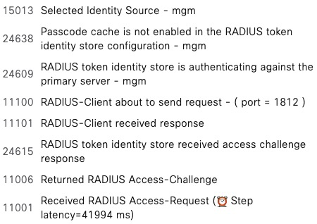
Change of Authorization (CoA)
radclient has the ability to send CoA requests.
In order for the network device to accept the CoA request from radclient, we need to add it as a RADIUS Server and enable it for CoA.
Here's a screenshot from a wireless controller.
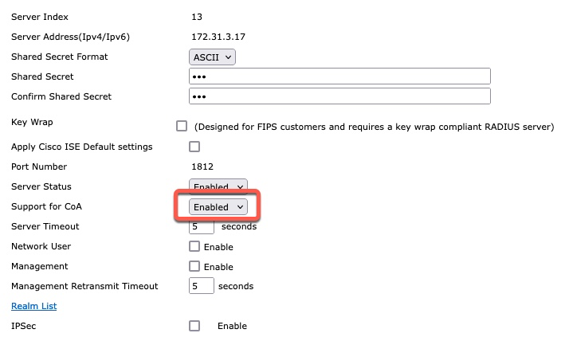
CoA action is controlled with Cisco-AV-Pair attribute. This is a screen shot of Wireshark showing reauthenticate command being sent.
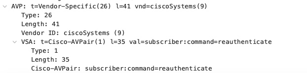
radclient cannot use a value containing an equal sign (=). Therefore, we have to send this VSA attribute using hex. Since the value is a static text, we can simply copy the hex value from Wireshark.
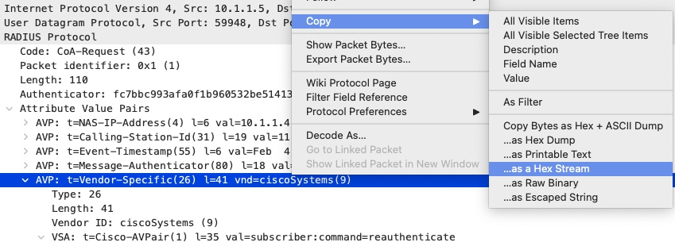
The resulting string is 1a29000000090123737562736372696265723a636f6d6d616e643d726561757468656e746963617465. As in previous examples, we need to remove the first two bytes since radclient will handle them.
$ echo Calling-Station-Id=dc:2b:2a:8d:13:03,Attr-26=0x000000090123737562736372696265723a636f6d6d616e643d726561757468656e746963617465|radclient 172.31.2.10:1700 coa cisco
Sent CoA-Request Id 49 from 0.0.0.0:36958 to 172.31.2.10:1700 length 80
Received CoA-ACK Id 49 from 172.31.2.10:1700 to 172.31.3.17:36958 length 20
$If we run debug aaa all enable on the controller, we can see that reauthentication is triggered
*radiusCoASupportTransportThread: Feb 06 23:48:23.413: processIncomingMessages: Received a message from server 172.31.3.17 of len 80 with reason code 0
*radiusCoASupportTransportThread: Feb 06 23:48:23.413: processIncomingMessages: received a frame with code 43 from 172.31.3.17 on port:36053
*radiusCoASupportTransportThread: Feb 06 23:48:23.413: Vendor Specif Radius Attribute(code=26, avp_len=41, vId=9)
*radiusCoASupportTransportThread: Feb 06 23:48:23.413: the value to be parsed subscriber:command=reauthenticate and the length =35
*radiusCoASupportTransportThread: Feb 06 23:48:23.413: Reauthenticate command = reauthenticate
*radiusCoASupportTransportThread: Feb 06 23:48:23.413: Request Authenticator(recv'd) - eb:49:d8:08:22:05:c1:a1:11:ce:ef:07:10:e8:d5:bc
*radiusCoASupportTransportThread: Feb 06 23:48:23.413: Request Authenticator(calc'd) - eb:49:d8:08:22:05:c1:a1:11:ce:ef:07:10:e8:d5:bc
*radiusCoASupportTransportThread: Feb 06 23:48:23.413: Received a 'CoA-Request' from 172.31.3.17 port 36053
*radiusCoASupportTransportThread: Feb 06 23:48:23.413: Packet contains 3 AVPs:
*radiusCoASupportTransportThread: Feb 06 23:48:23.413: AVP[01] Calling-Station-Id.......................dc:2b:2a:8d:13:03 (17 bytes)
*radiusCoASupportTransportThread: Feb 06 23:48:23.413: AVP[02] Unknown Attribute 0......................NULL (0 bytes)
*radiusCoASupportTransportThread: Feb 06 23:48:23.413: AVP[03] Unknown Attribute 0......................NULL (0 bytes)
*radiusCoASupportTransportThread: Feb 06 23:48:23.413: dc:2b:2a:8d:13:03 Calling-Station-Id ---> dc:2b:2a:8d:13:03
*radiusCoASupportTransportThread: Feb 06 23:48:23.413: dc:2b:2a:8d:13:03 Skipping the Rcvd Framed-IP-Address 0.0.0.0 match with mobile station IP 172.31.8.100 as one of them is zero.
*radiusCoASupportTransportThread: Feb 06 23:48:23.413: Handling a valid 'CoA-Request' regarding station dc:2b:2a:8d:13:03
*radiusCoASupportTransportThread: Feb 06 23:48:23.413: dc:2b:2a:8d:13:03 CoA Request: Reauthenticating station dc:2b:2a:8d:13:03
*radiusCoASupportTransportThread: Feb 06 23:48:23.413: Sent a 'CoA-Ack' to 172.31.3.17 (port:36053)Testing with eapol_test
eapol_test utility has the ability to send full EAP conversations with all protocol supported by wpa-supplicant. This is the supplicant used by all Linux distributions.
To utilize this command, we need to create a config file in the format for wpa_supplicant and feed it to eapol_test. Full reference to this configuration can be found here: https://android.googlesource.com/platform/external/wpa_supplicant_6/+/froyo/wpa_supplicant/wpa_supplicant.conf
eapol_test does not come with any RADIUS dictionaries. All the attributes need to be specified using their numbers.
Note that eapol_test is very verbose and will output a lot of data when executed
PEAP with MSCHAPv2
We first need to create a file with authentication parameters. In this example, the file is called peap.conf. Then we execute eapol_test, referencing this file.
The output of the command is trimmed to show just the essential data. We can see the attributes that are being sent, EAP certificate chain from ISE and finally the Access-Accept packet
$ cat peap.conf
network={
identity="testuser"
password="Password123"
phase1="peaplabel=0"
phase2="auth=MSCHAPV2"
}
$ ./eapol_test -c peap.conf -a10.1.1.5 -scisco
--------------------- SNIP --------------------------------
RADIUS message: code=1 (Access-Request) identifier=0 length=130
Attribute 1 (User-Name) length=10
Value: 'testuser'
Attribute 4 (NAS-IP-Address) length=6
Value: 127.0.0.1
Attribute 31 (Calling-Station-Id) length=19
Value: '02-00-00-00-00-01'
Attribute 12 (Framed-MTU) length=6
Value: 1400
Attribute 61 (NAS-Port-Type) length=6
Value: 19
Attribute 6 (Service-Type) length=6
Value: 2
Attribute 77 (Connect-Info) length=24
Value: 'CONNECT 11Mbps 802.11b'
Attribute 79 (EAP-Message) length=15
Value: 02b6000d017465737475736572
Attribute 80 (Message-Authenticator) length=18
Value: efda035694b1f45d216d0fa27e103eab
OpenSSL: Peer certificate - depth 1
Certificate:
Data:
Version: 3 (0x2)
Serial Number:
7c:8c:a8:f8:a9:78:7c:85:4b:1a:ae:f4:a0:94:bf:95
Signature Algorithm: sha256WithRSAEncryption
Issuer: DC=net, DC=ciscodemo, CN=demo-ca
Validity
Not Before: Jul 20 22:29:29 2021 GMT
Not After : Jul 20 22:39:29 2031 GMT
Subject: DC=net, DC=ciscodemo, CN=demo-ca
--------------------- SNIP --------------------------------
OpenSSL: Peer certificate - depth 0
Certificate:
Data:
Version: 3 (0x2)
Serial Number:
28:00:00:00:6a:55:d1:4d:75:0d:b3:a6:28:00:00:00:00:00:6a
Signature Algorithm: sha256WithRSAEncryption
Issuer: DC=net, DC=ciscodemo, CN=demo-ca
Validity
Not Before: Feb 3 21:17:47 2023 GMT
Not After : Feb 2 21:17:47 2025 GMT
Subject: CN=*.az.ciscodemo.net
--------------------- SNIP --------------------------------
Received RADIUS message
RADIUS message: code=2 (Access-Accept) identifier=10 length=247
Attribute 1 (User-Name) length=10
Value: 'testuser'
Attribute 25 (Class) length=77
Value: 434143533a30613031303130357843424868637970684430556d4c436c706f3565675647346a5434424968654337664946305f44686a72343a6973652d322f3436343931393636382f3238
Attribute 79 (EAP-Message) length=6
Value: 03ff0004
Attribute 80 (Message-Authenticator) length=18
Value: b35fe11dbbe43be7c2e8c3619b66b1e2
Attribute 26 (Vendor-Specific) length=58
Value: 000001371034af34fd337ecb628dd10297fbb7ed47b7732a8addf60bafaea3c725dc1547ed57c53fe597d390e84d66d9c9e04e28c93d8ea1
Attribute 26 (Vendor-Specific) length=58
Value: 00000137113499a1d9c230c41df2014fba3f451b62efbda5ea954d3cdb2c0997129c8e892db02324c82a4d617e9c1da0c3514fc530630b55
--------------------- SNIP --------------------------------
SUCCESS
$In ISE, we can see the successful authentication.
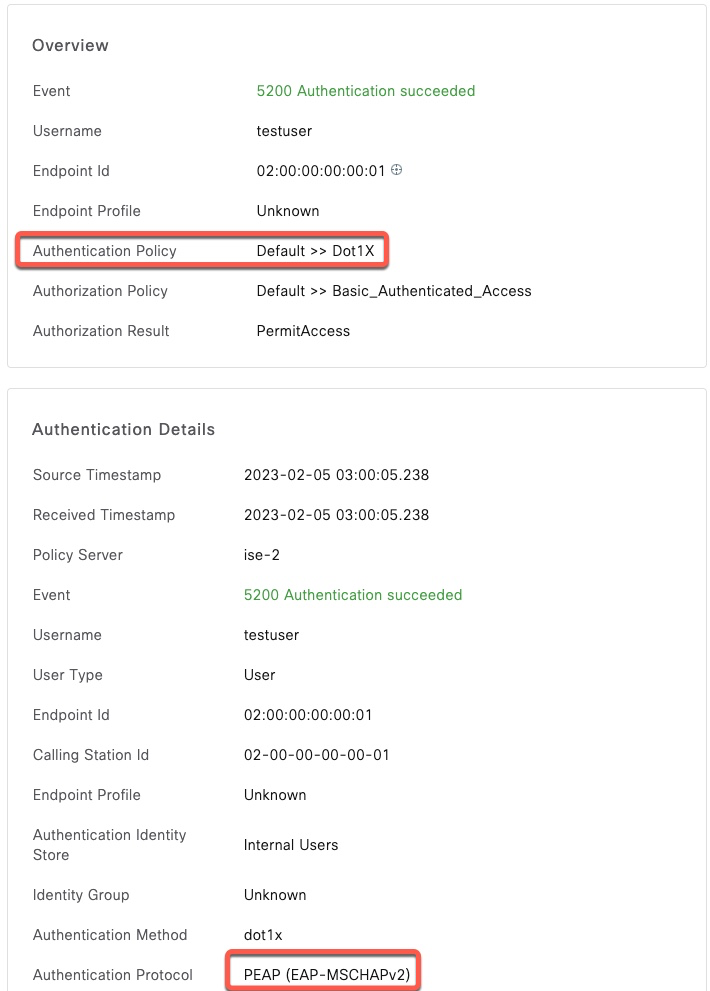
PEAP with MSCHAPv2 and attributes
To expand on the previous example, we will now add some RADIUS attributes to our request.
eapol_test only supports attributes in the raw numerical format. You can find a large number of dictionaries at this link: https://github.com/FreeRADIUS/freeradius-server/tree/master/share/dictionary/radius. In that repository, dictionary.rfc2865 is the RADIUS IETF dictionary.
For example, to specify Calling-Station-Id, we need to use 31 if we reference dictionary.rfc2865. eapol_test has an option to add the MAC address as shown on the following example.
For NAS-Port-Type (attribute 61), 15 refers to wired and 19 to wireless.
In the following example, we specify wireless authentication and the client MAC address.
$ ./eapol_test -c peap.conf -a10.1.1.5 -scisco -M 11:22:33:44:55:66 -N61:d:19
--------------------- SNIP --------------------------------
SUCCESS
$In ISE, we can confirm the attributes are seen.
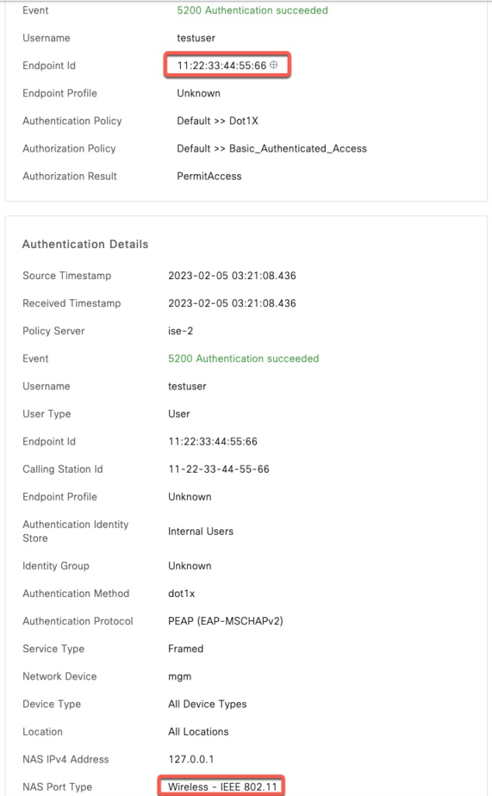
PEAP with MSCHAPv2 with VSA Attribute
With Cisco, the SSID name that the client is trying to connect to is sent in Called-Station-Id attribute and we can supply it using -N30:s:66-55-44-33-22-11:corp-wifi
For other vendors such as Aruba, the SSID name is sent in a VSA and we need to construct our VSA attribute manually as described in the ASA section above.
This is the rule that matches Aruba ESSID attribute
Referencing https://github.com/FreeRADIUS/freeradius-server/blob/master/share/dictionary/radius/dictionary.aruba, Vendor ID is 14823 and Essid-Name is 5
This are the values that go into our VSA
- Vendor: 14823 (0x000039E7)
- Attribute: 5 (0x05)
- Length: 11 (0x0B)
- Value: corp-wifi (0x636F72702D77696669)
Our VSA attribute is 00 00 39 E7 05 0B 63 6F 72 70 2D 77 69 66 69
$ ./eapol_test -c peap.conf -a10.1.1.5 -scisco -N26:x:000039E7050B636F72702D77696669
--------------------- SNIP --------------------------------
SUCCESS
$In ISE, we can see a correct match
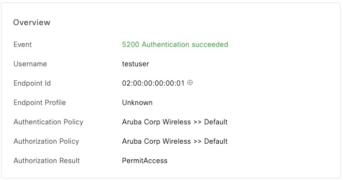
PEAP-TLS
This is not a common configuration, but nonetheless eapol_test does support it. In this example, instead of using MSCHAPV2 for authentication with PEAP, we use a client certificate instead.
Note in this configuration, PEAP is the outer tunneling protocol and TLS is tunneled inside of PEAP or phase 2. The certificate and private key attributes are suffixed to indicate that.
$ cat peap-tls.conf
network={
identity="tls-client"
phase1="peaplabel=0"
phase2="auth=TLS"
client_cert2="tls-client-full.cer"
private_key2="tls-client.key"
}
$ ./eapol_test -c peap-tls.conf -a10.1.1.5 -scisco -M 11:22:33:44:55:66 -N61:d:19
--------------------- SNIP --------------------------------
SUCCESS
$ISE shows successful authentication
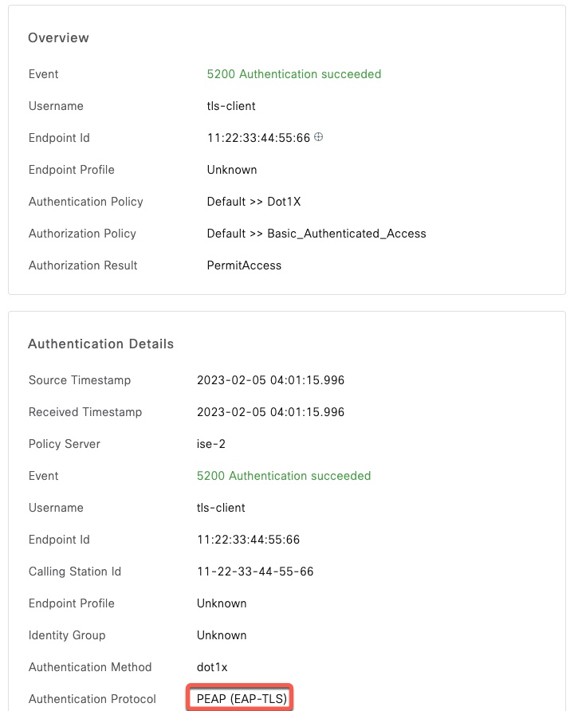
EAP-TLS without Full Chain
To perform TLS authentication, eapol_test needs access to both the client certificate and its private key. Private key must not be encrypted.
In the following example, we authenticate just with the client certificate and the private key.
$ cat tls.conf
network={
eap=TLS
identity="tls-client"
client_cert="tls-client.cer"
private_key="tls-client.key"
}
$ ./eapol_test -c tls.conf -a10.1.1.5 -scisco -M 11:22:33:44:55:66 -N61:d:19
--------------------- SNIP --------------------------------
FAILUREThis authentication fails with ISE reporting about unknown certificate from the client.
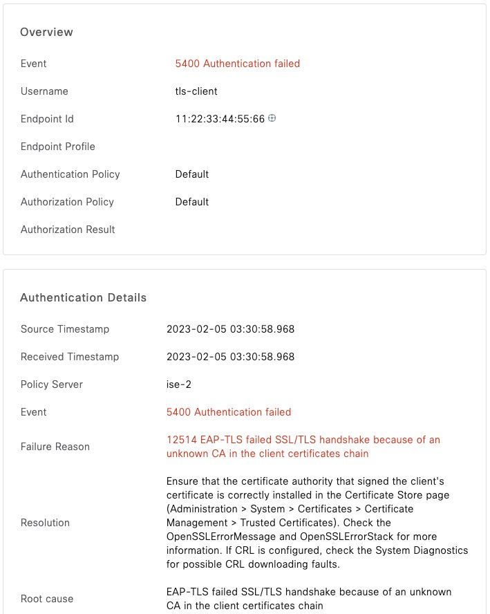
EAP-TLS with Full Chain
If you recall, we only loaded the Root CA of the client certificate to ISE. As a result, our previous test resulted in a failure.
eapol_test is able to send the full chain to ISE. To do that, we need to first combine all the certificates into one file and then authenticate using that file
$ cat tls-client.cer securityccie-sub-ca-2.cer securityccie-sub-ca-1.cer securityccie-root.cer > tls-client-full.cer
$ cat tls-full.conf
network={
key_mgmt=WPA-EAP
eap=TLS
identity="tls-client"
client_cert="tls-client-full.cer"
private_key="tls-client.key"
}
$ ./eapol_test -c tls-full.conf -a10.1.1.5 -scisco -M 11:22:33:44:55:66 -N61:d:19
--------------------- SNIP --------------------------------
SUCCESS
$Authentication is successful since ISE received the full chain.
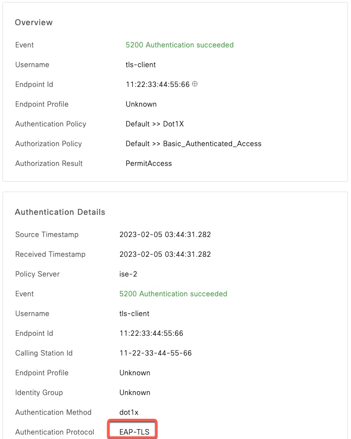
EAP-TTLS with PAP
This authentication protocol is commonly used for One Time Token (OTP) authentication when the user password needs to be transmitted in clear text
network={
identity="testuser"
password="Password123"
phase2="auth=PAP"
}
$ ./eapol_test -c ttls.conf -a10.1.1.5 -scisco -M 11:22:33:44:55:66 -N61:d:19
--------------------- SNIP --------------------------------
SUCCESS
$Success in ISE
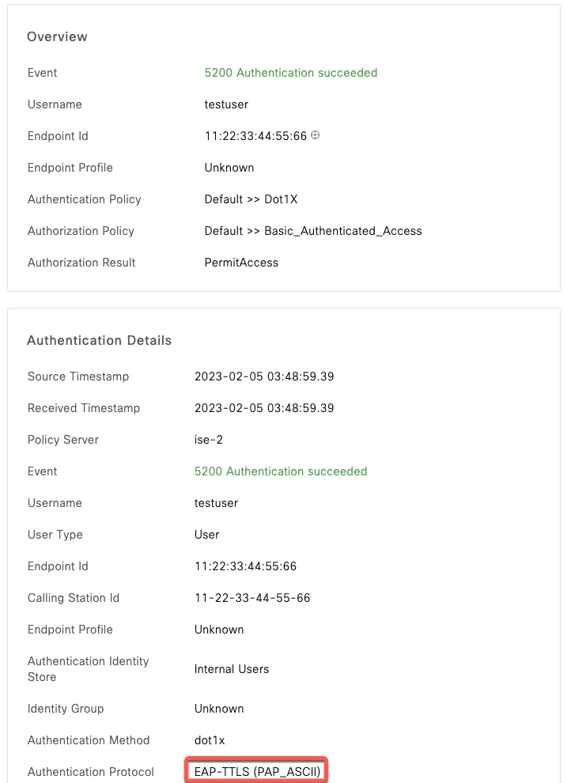